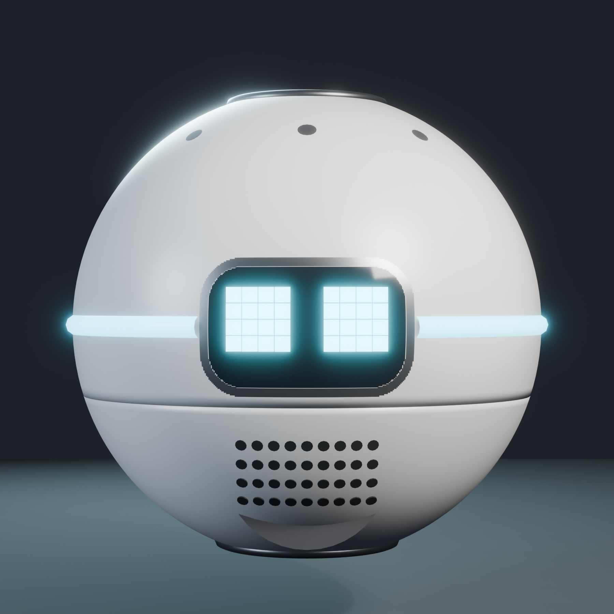
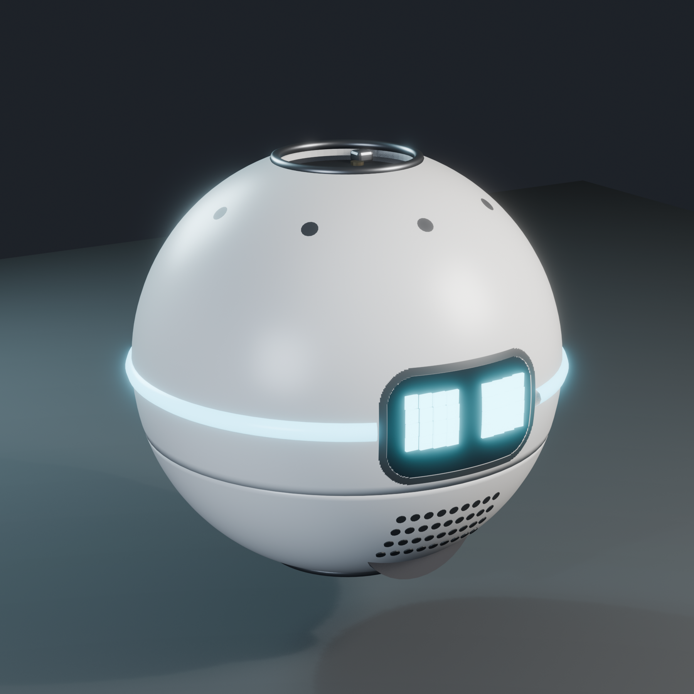
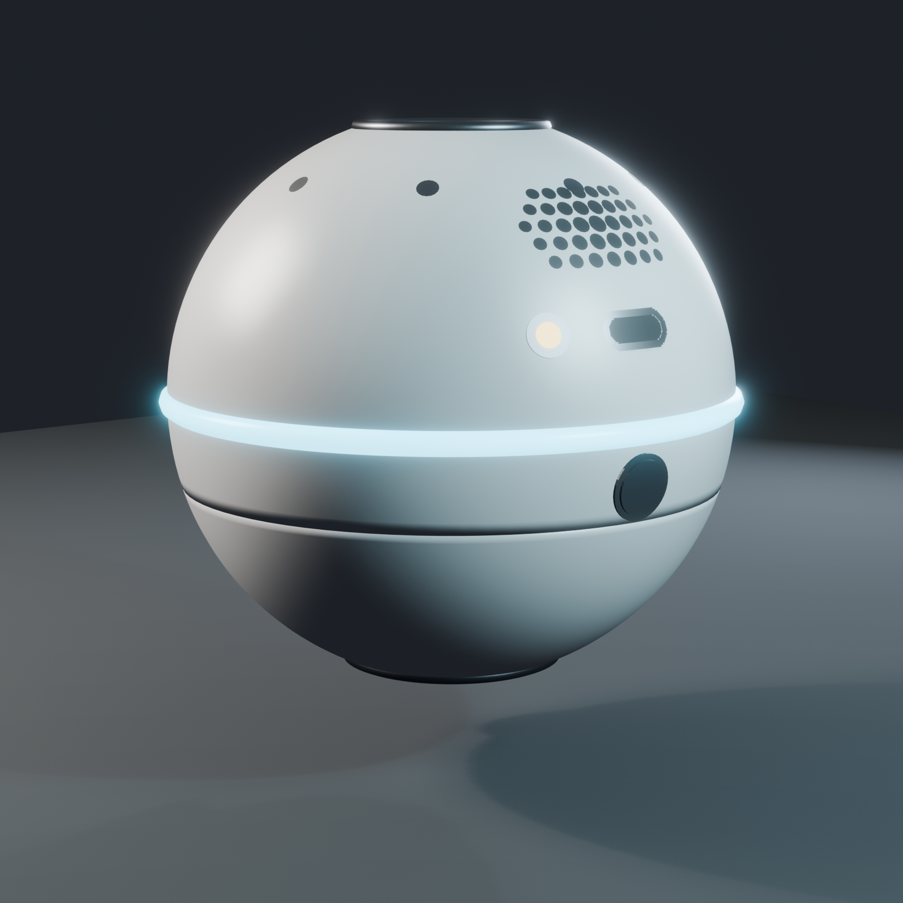
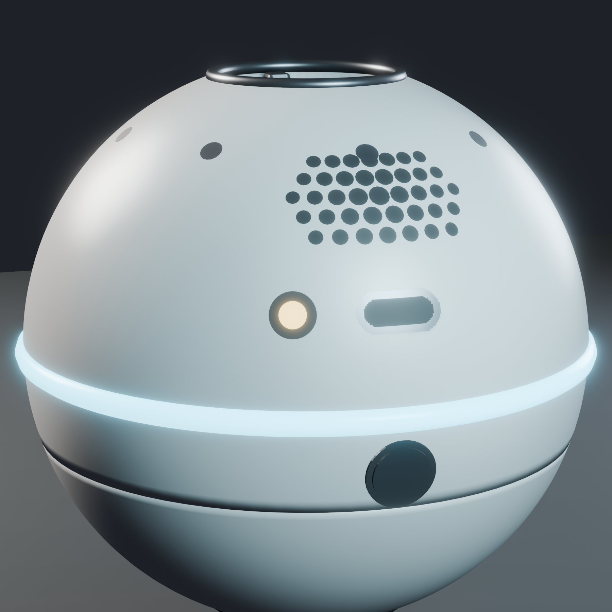
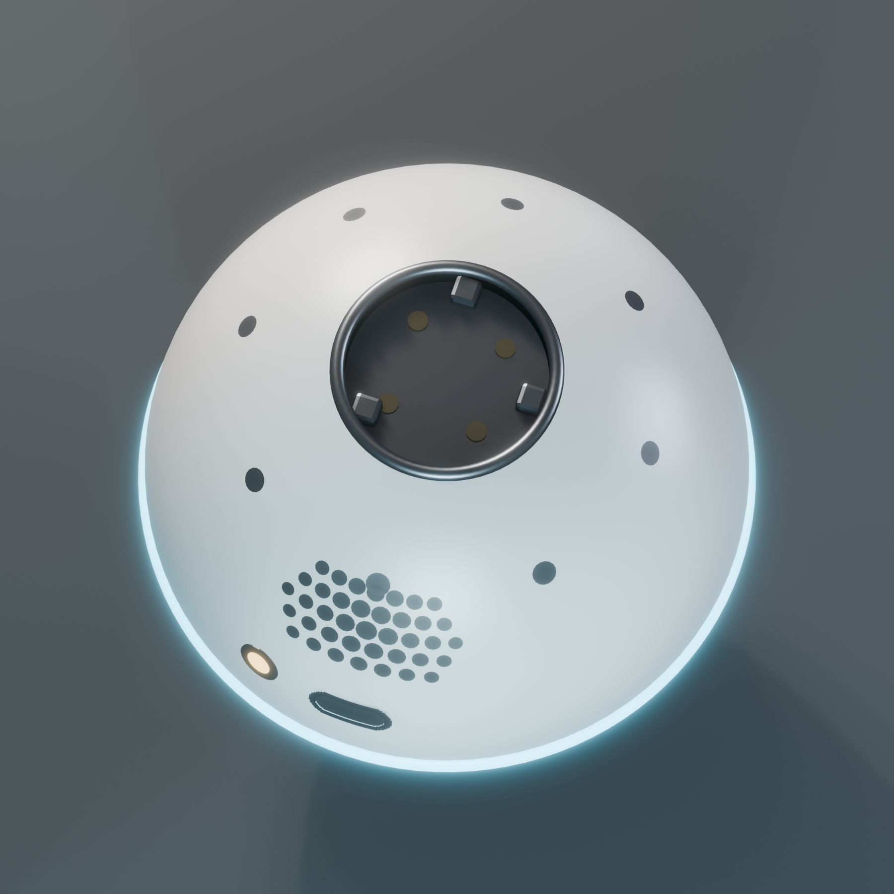
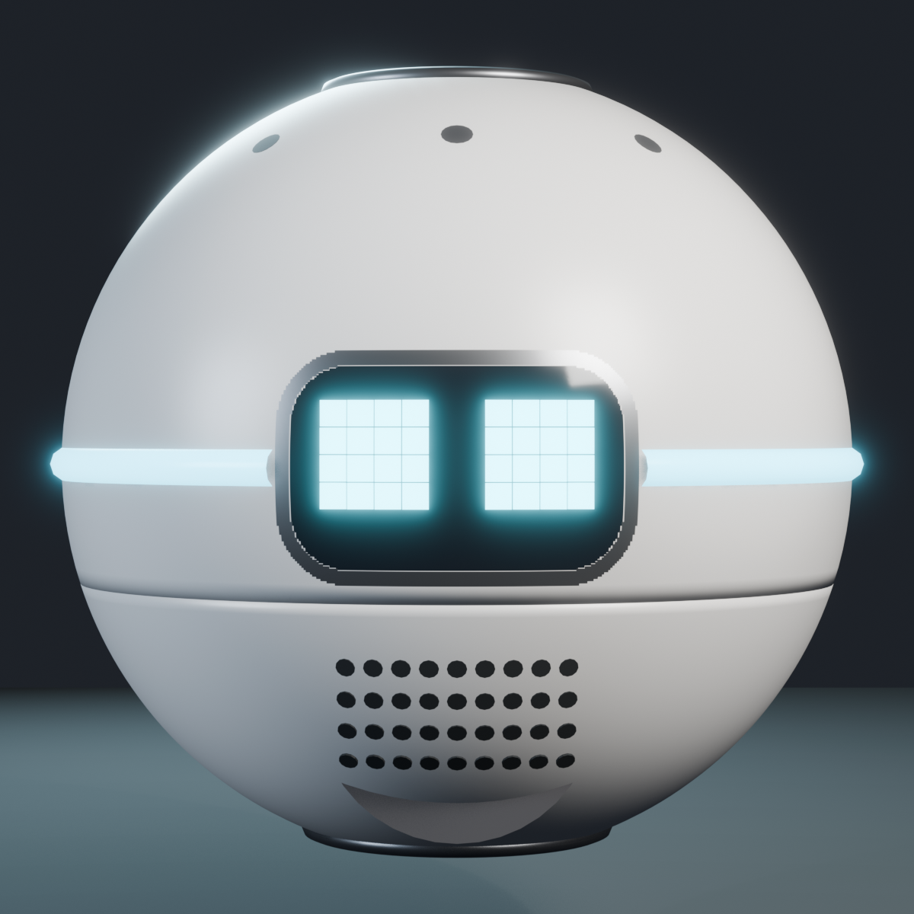
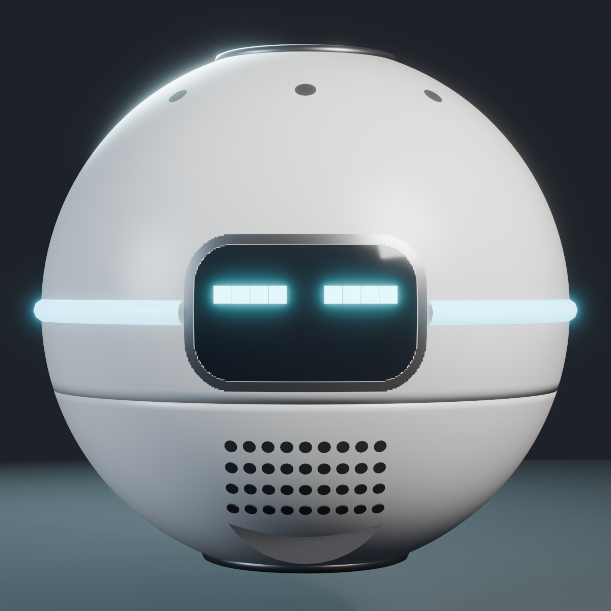
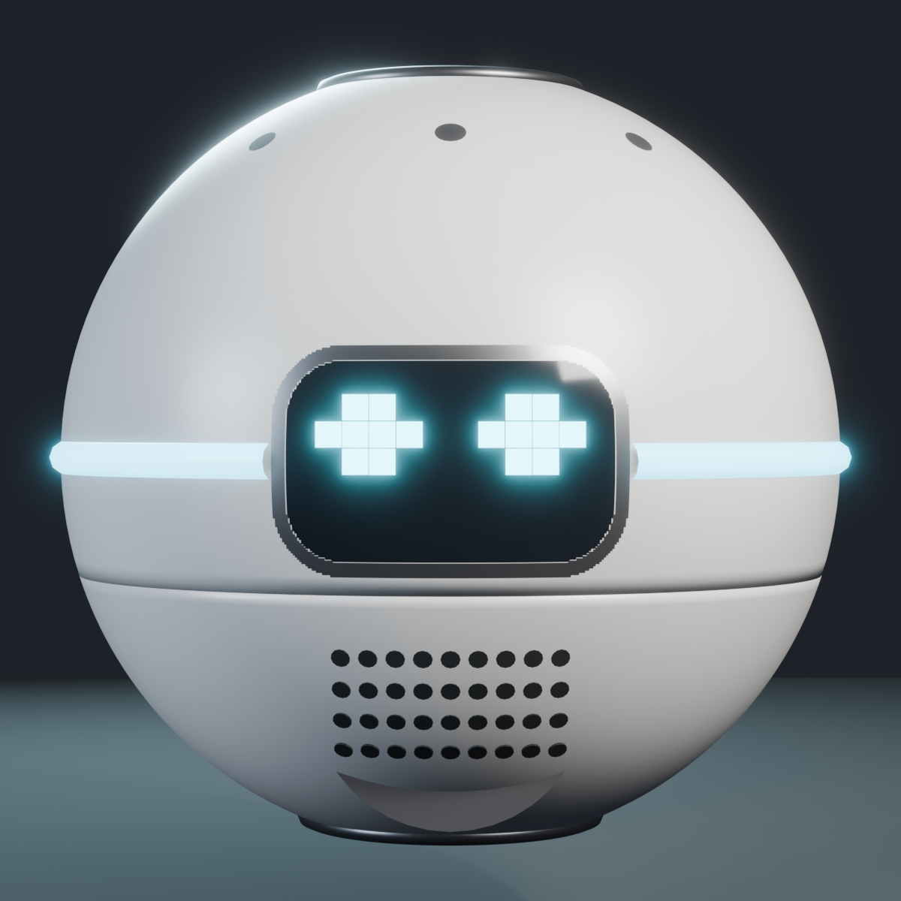
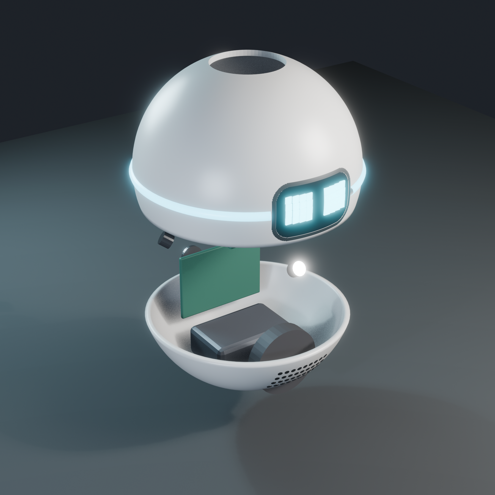

CoreBall — 核心球 φ80 初步设计
单手可握 ｜ 上下分件 ｜ 30×18 圆角点阵窗口 ｜ 赤道灯带 ｜ 两端同标准接口
三视图

正面 · 窗口占球面宽 42%

四分之三 · 灯带在这里被窗口切断

背面 · 服务面
背面细节

散热阵列（孔径由中心向外递减）｜ 服务排：复位针孔 · USB-C · 状态灯 ｜ 电源键
接口

顶部：φ26 井 + 4 触点 + 3 定位键 + 外圈 8 个红外接收口
背面 · 服务面
三种表情

豆豆眼 · 常态

眯眼 · 安静 / 困

爱心眼 · 高兴
结构与内部

分割面 z=−12：上壳装脸 + 灯带 + 麦克风 + 顶接口，下壳装喇叭 + 底接口